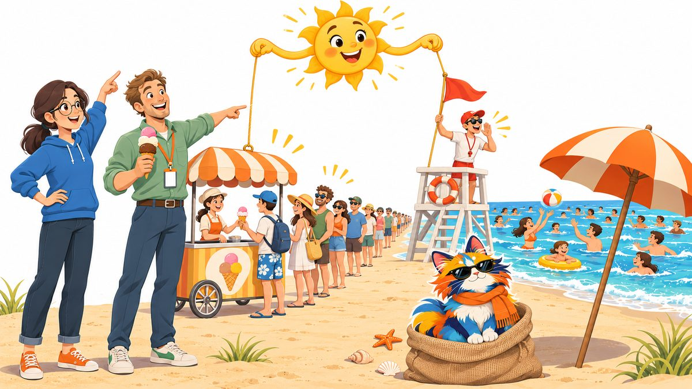
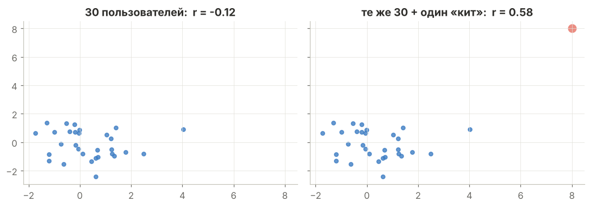
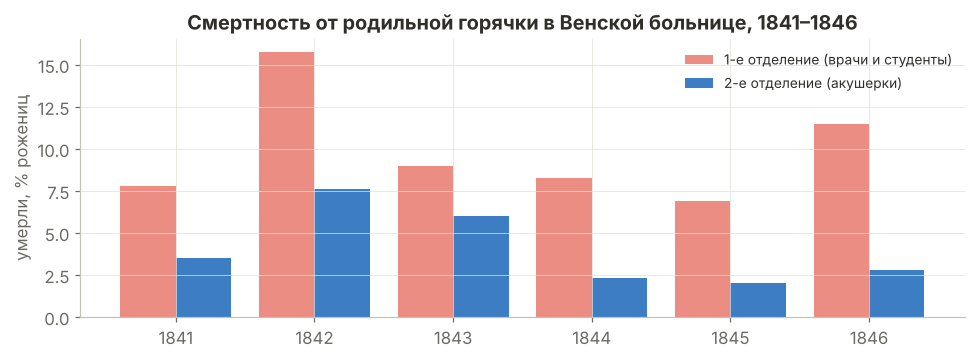
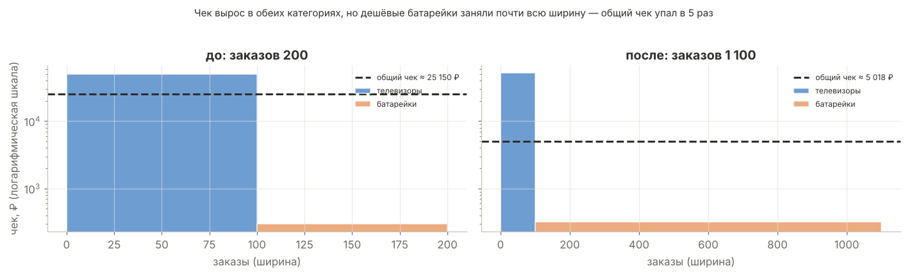

Вена, 1840-е годы, крупнейшая больница города. В ней два родильных отделения, и рожениц принимают в них по очереди, через сутки, — почти случайно. В первом роды принимают врачи и студенты-медики, во втором — акушерки. От родильной горячки в первом отделении умирают в разы чаще, и женщины просят не класть их туда.
Занятие 3 · блок 5
Корреляция ≠ причинность

Мы разобрали три источника ложной связи — Симпсона, выжившего, Берксона. Соберём их в одну схему: когда две метрики связаны, вариантов объяснения всегда больше одного.
Пять объяснений связи
Если и связаны, возможно:
- влияет на — честная причинность.
- Обратная причинность — влияет на .
- Конфаундер (от англ. to confound — смешивать), общая причина — третья величина влияет и на , и на . Жара повышает и продажи мороженого, и число купающихся.
- Отбор — связь возникла из того, кто попал в данные: выживший, Берксон.
- Совпадение — случайность или подбор: из многих сравнений одно всегда «найдётся», а один выброс может сделать «связь».

Рандомизированный эксперимент убирает объяснения 2–4: случайное разбиение не зависит ни от , ни от , ни от отбора. Остаётся случайность — её контролирует статистический критерий.
Задача 14. Назови механизм
Для каждого утверждения назови самый вероятный механизм связи и предложи, как проверить причинность.
- Пользователи, которые получают пуш-уведомления, возвращаются в приложение в 2 раза чаще.
- В городах, где больше водителей такси, выше цены поездок.
- В дни, когда продают больше мороженого, больше утоплений.
- Среди премиум-клиентов банка те, кто дольше обслуживается в банке, тратят меньше. Значит, со временем клиенты «остывают»?
- После редизайна главной страницы в сентябре конверсия выросла на 3%.
Решение
1. Конфаундер и отбор — вовлечённость: пуши получают те, кто их не отключил и недавно был активен. Проверка: A/B, случайной части пуши не слать.
2. Обратная причинность: высокие цены привлекают водителей; плюс конфаундер — спрос. Проверка: прирост водителей не из-за цен, например новая программа найма.
3. Конфаундер — жара. Проверка: сравнить дни с одинаковой погодой.
4. Отбор, Берксон: премиум дают за траты или стаж. Новичок в премиуме — только если много тратит, старожил — при любых тратах. Проверка: по всем клиентам.
5. Совпадение во времени: сентябрь, сезон, другие релизы. Проверка: год к году, а лучше A/B старой и новой главной.
Отбор и конфаундер · обратная причинность · конфаундер · Берксон · совпадение во времени. Во всех случаях, где можно, — A/B.
Земмельвейс и мытьё рук: как нашли причину

Задача 15. Найди причину, как Земмельвейс
Дополнительная задача — если останется время
- Предложи как можно больше объяснений разницы между отделениями. К какому из пяти механизмов относится каждое?
- Как проверить каждое объяснение?
- В 1847 году в первом отделении ввели мытьё рук хлорной известью. Почему вывод «мытьё рук помогает» убедительнее, если смотреть не только на первое отделение до и после, но и на второе рядом?
Решение
Шаг 1. Масштаб. За 1841–1846 годы: у врачей 9.9% смертей, у акушерок 3.9% — в 2.5 раза больше.
Шаг 2. Перебираем объяснения.
| Объяснение | Механизм | Проверка |
|---|---|---|
| в первое попадают более больные | отбор | принимали по очереди — ✗ |
| теснота | конфаундер | во втором теснее — ✗ |
| климат, здание | конфаундер | отделения рядом — ✗ |
| поза при родах, священник с колокольчиком | причина? | поменяли — не изменилось — ✗ |
| руки врачей после вскрытий | причина | коллега умер от пореза на вскрытии с похожими симптомами; акушерки вскрытий не делают — ✓ |
Шаг 3. Вмешательство. С мая 1847 года мытьё рук хлорной известью; смертность первого отделения упала примерно до 1–2%, до уровня второго.
Шаг 4. Зачем контроль. «До и после» в одном отделении путает эффект с сезоном и прочими переменами. Второе отделение живёт в той же больнице в то же время. Эффект = изменение у врачей − изменение у акушерок: разность разностей.
Земмельвейс по очереди исключил отбор и конфаундеры и нашёл причину — руки после вскрытий. Второе отделение — контроль: если бы смертность упала из-за сезона, она упала бы и у акушерок.
Корреляция ≠ причинность в других сферах
- Гормональная терапия. В наблюдательных исследованиях женщины на терапии болели сердцем примерно на 40% реже. Рандомизированное испытание WHI (2002) показало обратное: в группе терапии болезни сердца на 29% больше. Терапию в наблюдательных данных чаще принимали более здоровые и обеспеченные — общая причина.
- Пожарные и ущерб. По всем пожарам: больше машин — больше ущерб. Внутри пожаров одного размера — наоборот. Общая причина — размер пожара.
- Полиция и преступность. Где больше полиции, больше зарегистрированных преступлений: полицию направляют туда, где преступлений много, и там больше замечают.
- «Проклятие обложки». На обложку попадает игрок после рекордного сезона — навык плюс удача. В следующем сезоне удача обычная. Это регрессия к среднему, как у инструкторов ВВС из занятия 1.
Дополнительная задача — если останется время
Задача 16. Приложение удваивает удержание
- Пользователи, установившие мобильное приложение, удерживаются в два раза лучше тех, кто не установил. Будешь ли ты заставлять всех ставить приложение? Что проверишь сначала?
- В сервисе появился чат с поддержкой. Из 3 000 клиентов 1 200 им воспользовались. Удержание на 30-й день: у воспользовавшихся 68% (816 из 1 200), у остальных 60% (1 080 из 1 800). По активности до появления чата:
Сколько из разницы в 8% можно приписать самому чату?
Удержание на 30-й день Чат Без чата были активны раньше 80% 78% были неактивны раньше 50% 48% - Провели эксперимент: пуш уговаривал ставить приложение. Установок стало больше, а удержание не изменилось. Как это объяснить?
Решение
Пункт 1. Самоотбор: приложение ставят те, кто и так любит сервис. Проверка — эксперимент с подталкиванием: случайной половине предлагаем установить и сравниваем всю половину.
Пункт 2, шаг 1. Состав групп. Пусть в группе «чат» прежде активных: , — 60%. В группе «без чата»: , — 40%.
Шаг 2. Внутри слоёв чат «даёт» по 2%: 80 против 78, 50 против 48.
Шаг 3. Откуда 8. Дадим группе «чат» состав группы «без чата»: . При одинаковом составе разница , остальные 6% — состав.
Пункт 3. Установка была маркером лояльности, а не причиной.
1) Самоотбор — нужен эксперимент с подталкиванием. 2) Не больше 2% из 8%, и даже эти 2% не доказаны: внутри слоя чатом могли чаще пользоваться самые вовлечённые. 3) Установка — маркер, эксперимент это и показал.
Схема ответа «метрика упала»
- Данные: это реальное число? Логирование, определение, задержки.
- Масштаб: сравнить с нормой и шумом — ±2 SE, прошлые периоды, бенчмарки.
- Дерево и воронка: разложить на множители, найти узел с основной потерей.
- Срезы и состав: где сосредоточено, не смена ли состава.
- Время и события: что поменялось и когда.
- Гипотеза и проверка: одна-две причины и как проверить, лучше экспериментом.
Дополнительная задача — если останется время
Задача 17. Средний чек по категориям
В маркетплейсе только 4 категории товаров. Средний чек в каждой категории вырос. Что будет с общим средним чеком? Приведи пример с числами. Если общий чек упал — что это значит для бизнеса?
Решение
Шаг 1. Контрпример на двух категориях. Телевизоры: 100 заказов, чек 50 000 → 52 000 ₽. Батарейки: 100 → 1 000 заказов, чек 300 → 320 ₽.
Шаг 2. Общий чек. До: ₽. После: ₽ — упал в 5 раз. Вес батареек вырос с 50% до 91%.

Шаг 3. Для бизнеса. Выручка 5.03 → 5.52 млн, +10%; телевизоров продали столько же.
Общий чек может что угодно; механизм — смена состава. Падение чека не провал: добавились массовые дешёвые заказы. Смотреть на выручку и маржу.
Дополнительная задача — если останется время
Задача 18. Конверсия в подписку 5%
Ты менеджер продукта и запускаешь подписку на «умный дом» в новом жилом комплексе на 700 квартир: домофон из приложения, пропуска для курьеров, голосовое управление. Через месяц конверсия в подписку — 5%. Это очень мало. Что будешь делать? Известно: подписка стоит 199 ₽ в месяц, первый месяц бесплатный; по логам домофонов 80% открытий двери — пин-кодом.
Решение
Данные. 5% от 700 — 35 подписок. Считаем от всех квартир или от заселённых? Если заселено 300 — уже 12%.
Масштаб. С чем сравниваем «мало»: другие ЖК, план. Месяц — мало, и он бесплатный: платная конверсия ещё не видна.
Воронка. Знает о подписке → открыл экран → оформил триал → остался после триала. Где основная потеря?
Срезы. Новые и старые жильцы, курьерские заказы, iOS и Android.
Поведение. 80% открытий — пин-кодом: управление домофоном из приложения жителям просто не нужно.
Не «докручивать баннер», а найти узел. Проблема в ценности, а не в дистрибуции: проверяем другую ценность — пропуска курьерам, гостевой доступ — или упаковку экспериментом на части подъездов.
Метрика — не число, а устройство
У связи двух метрик пять объяснений: причинность, обратная причинность, конфаундер, отбор, совпадение. Рандомизация убирает три из них. «До и после» — не эксперимент: в «после» поменялось всё. На «метрика упала» отвечай по схеме: данные → масштаб → дерево → срезы и состав → время → гипотеза и проверка.